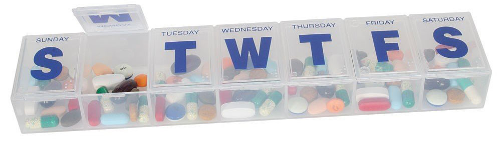
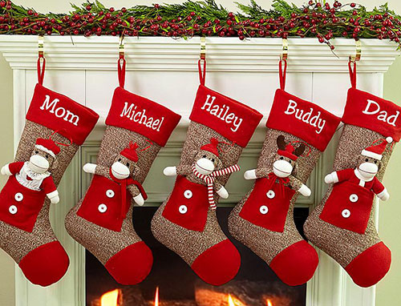

Arrays are a lot like those pill boxes you've seen your grandparents fumbling with (not because they're feeble or anything-- those plastic things can be damn difficult). Yes, those ones with little plastic compartments, each marked for a day of the week. Much like a pillbox, each compartment in a Ruby array can hold a Ruby object. Much like a pillbox, each compartment is labeled: pillboxes start with Sunday, Monday, Tuesday, and so on, while arrays start with 0, 1, 2, and so on. Arrays are exactly like pillboxes in that the compartments have a start, an end, and a linear order between them. Arrays, though, can have as many compartments as needed (limited by computer memory)! The following is how we can create, store to, and access a Ruby array:
# create an empty array:
my_array = []
# add an object (in this case, the number 2) to our array:
my_array << 2
# add another object (in this case, a string) to our array:
my_array << "karate"
# prints out the contents of "container" 0, which is the number 2:
puts my_array[0]
# prints out the contents of "container" 1, which is the string "karate":
puts my_array[1]
No doubt you know of this Winter Holiday cultural artifact: the mantel over a fireplace with Christmas stockings hanging from it. When Santa swoops down the chimney, he knows where to put Michael's gift or Hailey's gift because each stocking is labeled with a name. In turn, when Christmas morning finally arrives, Michael knows exactly which stocking to find his gift-- as does Hailey, Buddy, and so on. Note that each stocking is labeled with a unique name. What if two or more stockings had the same, exact name you wonder? Well, Santa wouldn't know where to place his intended gifts; the kids, the next morning, would cuss and spit and pull each other's hair over whose gifts belonged to whom. Human sacrifices, cats and dogs living together, mass hysteria! So unique names on the stockings are pretty crucial-- keep that thought.

A hash is like a mantel that can hold as many stockings as we need (again, limited by computer memory). In the real world, for each stocking on a mantel, a unique name is essentially paired with the gift. In the Ruby programming world, for each "stocking" in a hash, a "key" is paired with a "value". Just as with names on a stocking, a "key" must be unique-- like differing numbers or differing strings. Just like gifts, a "value" can be any object, duplicates allowed (in the same way that Johnny and Rex could both wish for and get skateboards in their respective stocking). You'll recall that arrays have compartments with an order to them. On a mantel, stockings aren't hung in any particular order; the compartments of a hash are the same way. The following is how we can create, store to, and access a Ruby hash:
# create an empty hash:
my_hash = {}
# add a "stocking" with label "Johnny" and stuff it with a number:
my_hash["Johnny"] = 5
# add another "stocking" with label 9 and stuff it with a string:
my_hash[9] = "monkeys"
# prints out the contents of the "stocking" labeled "Johnny", which is the number 5:
puts my_hash["Johnny"]
# prints out the contents of the "stocking" labeled 9, which is the string "monkeys":
puts my_hash[9]
So when do I use an array and when a hash you ask? Good question! Arrays are good, general purpose storage for things. For instance, you could store all the test scores for a class. Then you could loop through each score in the array to find the lowest, or the highest. You could loop through, add up all the scores, and finally divide by the number of scores to get the class average on the test. You could sort, or order, the array using various algorithms. Then, with a sorted array, you could quickly find the median score, or just quickly get the worst and highest scores (situated at the two ends of the array). A hash is usually most useful when leveraging its unique keys. For instance, keeping with our test scores, you could go through each test score, creating a "stocking" using the test score as the "key" or label, and keep a counter for the number of times you've seen that particular test score to serve as you "value". At the end, you'll have a hash with all the test scores and the frequency of students who had each score. Another possible way to use the hash is to go through each test score, creating a "stocking" labeled "A" if the test score is between 90-100, "B" if the test scores is between 80-100, etc. The values of the hash can be the number of test scores that fall into each letter grade. Thus, at the end, you'll have a hash with the number students for each grade-- the grade distribution!